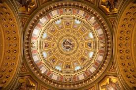

Karakteristike umjetnosti
Barokna umjetnost je bogata detaljima, kontrastima svjetla i sjene te snažnom emocijom. Barokna umjetnost razvila se u Europi kao odgovor na velike promjene – posebno proturereformaciju i sve veću moć kraljevskih i crkvenih institucija. Bila je moćno sredstvo uvjeravanja i dojma: trebala je zadiviti, potaknuti vjeru, lojalnost ili strahopoštovanje.
Karakteristike umjetnosti
Dramatičnost i pokret: Prikazi scena punih pokreta, napetosti i emocija – sve je dinamično, često teatralno. Bogata ornamentika: Detalji su raskošni, slojeviti, često zlatom naglašeni. Površine su sjajne, prožetost svjetla i sjene je naglašena. Kontrast svjetla i sjene (chiaroscuro): Korišten za stvaranje dubine i dramatičnog ugođaja. Realizam i emocionalnost: Lica i tijela prikazuju prave osjećaje – patnju, ekstazu, čuđenje. Religijska tematika: Često prikazuje prizore iz Biblije, ali na vrlo emotivan, ljudski način. Veliki formati i monumentalnost: Umjetnost se seli u ogromne crkve, palače i trgove – sve mora ostaviti snažan dojam.